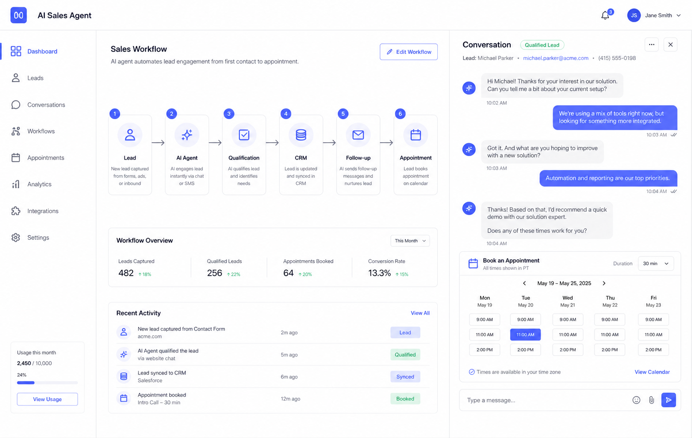
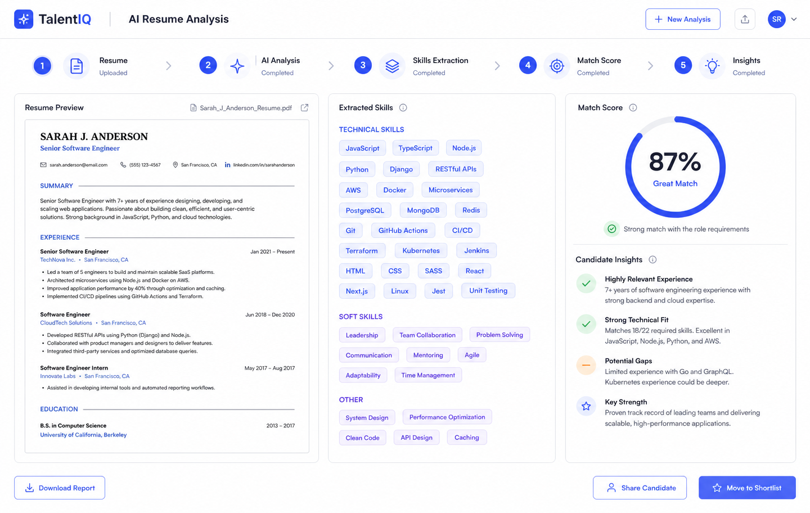
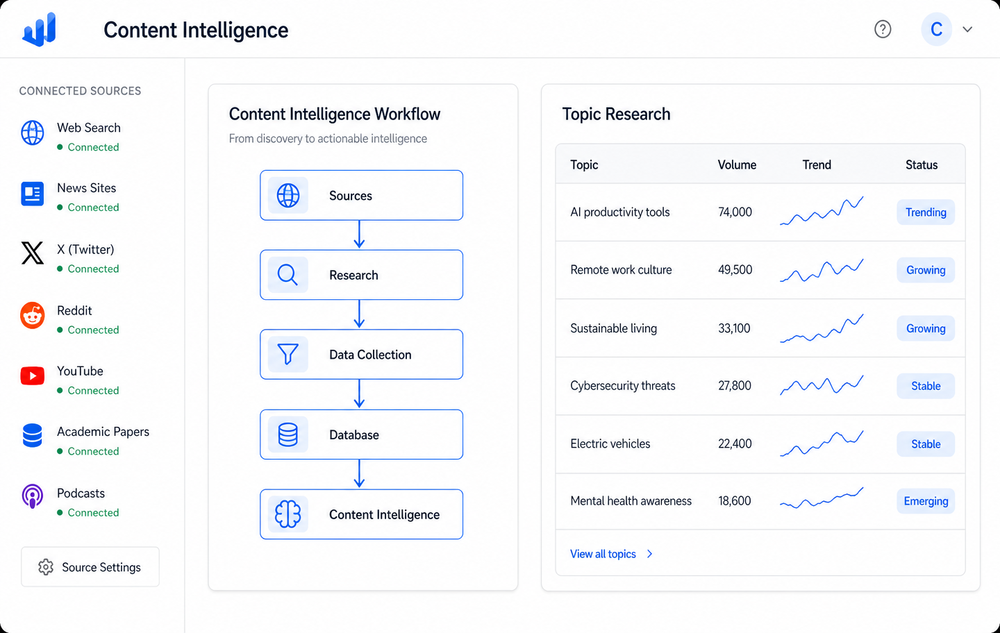
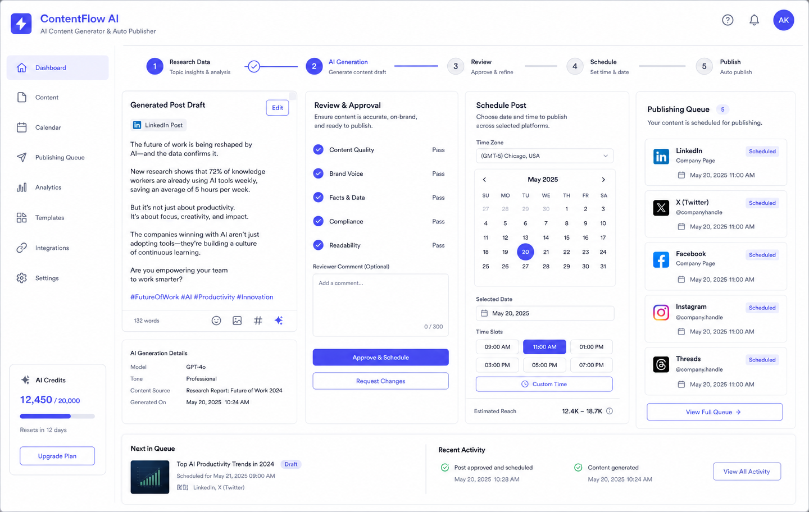
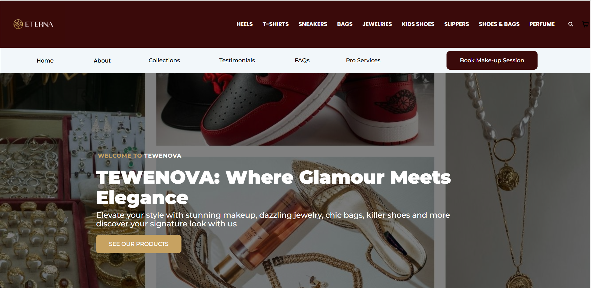
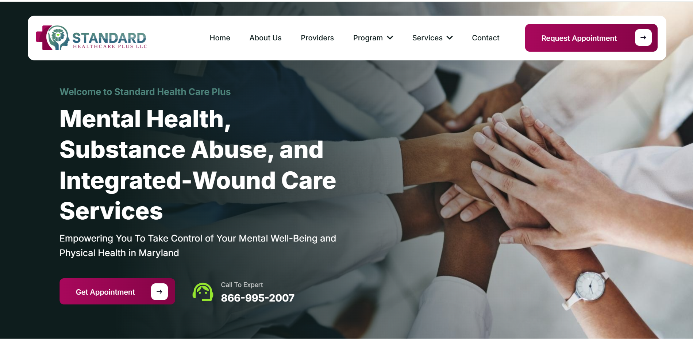
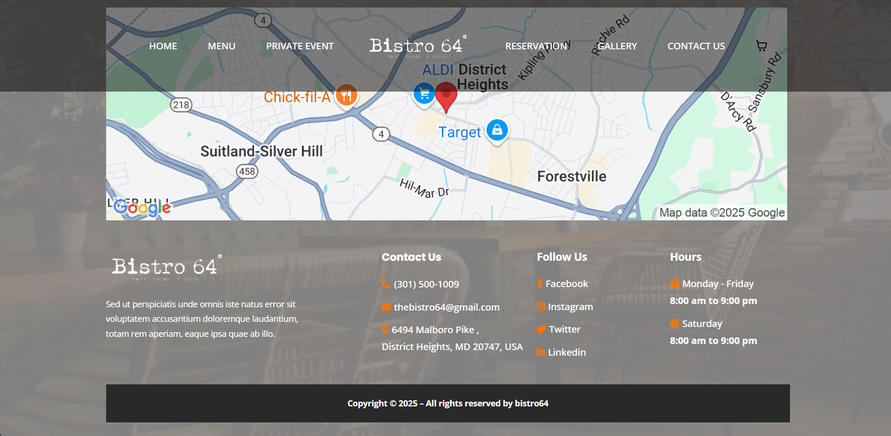
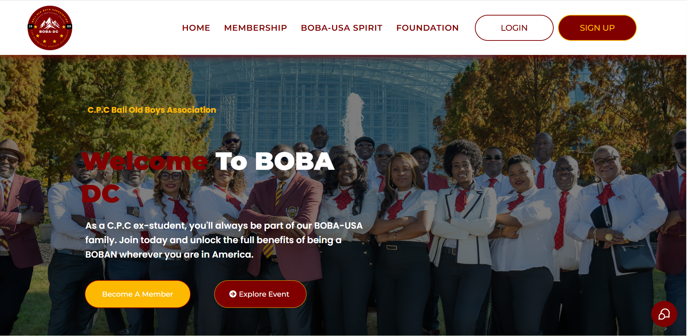
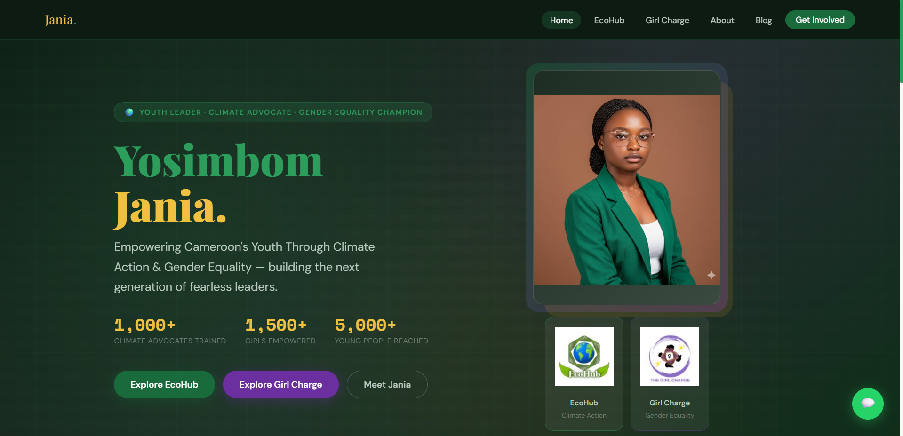
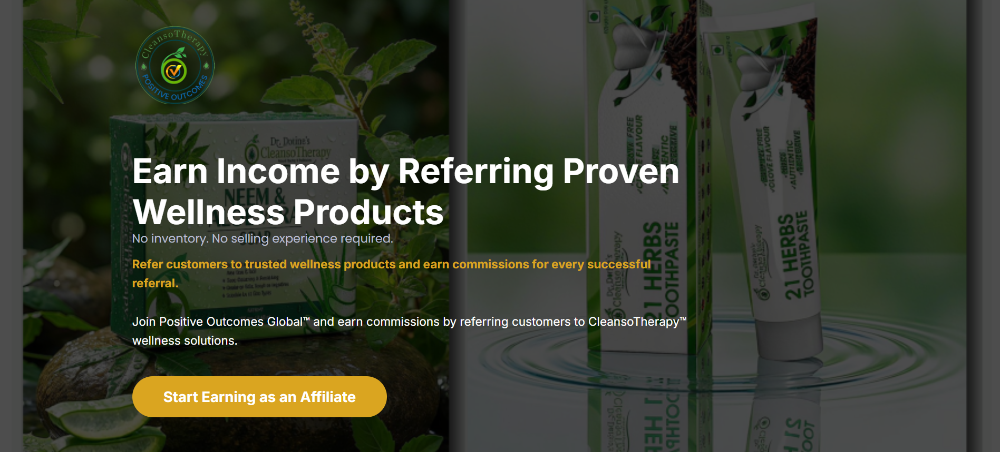

AI Automation Engineer
UtivaBuilt AI agents and automated workflows for sales, appointment booking, resume analysis, research and content publishing, connecting LLMs, CRMs, databases and APIs into systems that replace manual steps end to end.
AI Automation Engineer
I build AI agents and automation systems that save time and help businesses scale.
I design and build AI-powered workflows, agents, integrations, and automation systems that reduce repetitive work, connect business processes, and help teams operate more efficiently. My software engineering background, web applications, APIs, and databases, is what makes those systems reliable in production.
AI automation engineering, built on a software engineering foundation.
I am an AI Automation Engineer and software developer focused on building practical AI-powered systems that help
businesses automate repetitive work and operate more efficiently. My work combines AI agents, workflow automation,
APIs, databases, integrations, and software engineering to turn manual processes into repeatable systems.
I enjoy taking a problem, breaking down the workflow, identifying what can be automated, connecting the necessary
tools, and building a system that can actually perform the work. My background in software engineering gives me a
strong foundation for building and integrating reliable automation systems. If you have a process that eats time,
let's connect.
AI Agents
Workflow Automation
APIs & Webhooks
Databases
JavaScript / React
Node.js
Make
n8n
AI agents and automated workflows I've built, what they do, what they replace, and how the process flows




Software engineering is still a core part of what I do. These are websites, platforms and web systems I have built for clients and businesses, and work I continue to take on alongside my AI automation projects.







Practical AI and automation systems that remove manual work and connect your business processes.
Custom AI agents that engage leads, answer questions, qualify prospects, support customers and book appointments. Built on OpenAI and Claude, connected to your CRM, calendar and data so the agent acts on real business context instead of generic replies.
I map your process, identify the repetitive steps, and automate them with Make, n8n and Zapier, lead routing, follow-ups, CRM updates, reporting, onboarding and internal handoffs, so the work happens reliably without someone remembering to do it.
REST APIs, webhooks, JSON, databases and custom scripts to connect the tools that don't talk to each other. When no-code hits its limits, I build the custom software and backend logic that keeps the automation stable in production.
Where I've built AI automation systems, how I trained for it, and the stack I use.
Built AI agents and automated workflows for sales, appointment booking, resume analysis, research and content publishing, connecting LLMs, CRMs, databases and APIs into systems that replace manual steps end to end.
Built and maintained business websites and web platforms for clients, integrated third party APIs and CRMs, and automated lead capture and follow up so teams could serve more customers with less manual work.
Worked on web applications and internal tooling, improving performance, structure and reliability while automating repetitive development and reporting tasks.
Developed and maintained web applications, APIs and integrations, and automated internal processes to reduce repetitive work for clients and internal teams.
AI agents, workflow automation, prompt engineering, API integration and automation architecture using OpenAI, Claude, Make, n8n and Zapier.
View CertificatePractical software engineering, web development, APIs and integrations applied to real client projects.
View CertificateSoftware engineering, databases, algorithms and systems: the foundation behind the automation systems I build today.
See how I've helped businesses like yours succeed.
More Projects on Github
Let's chat on WhatsApp
Send me an Email